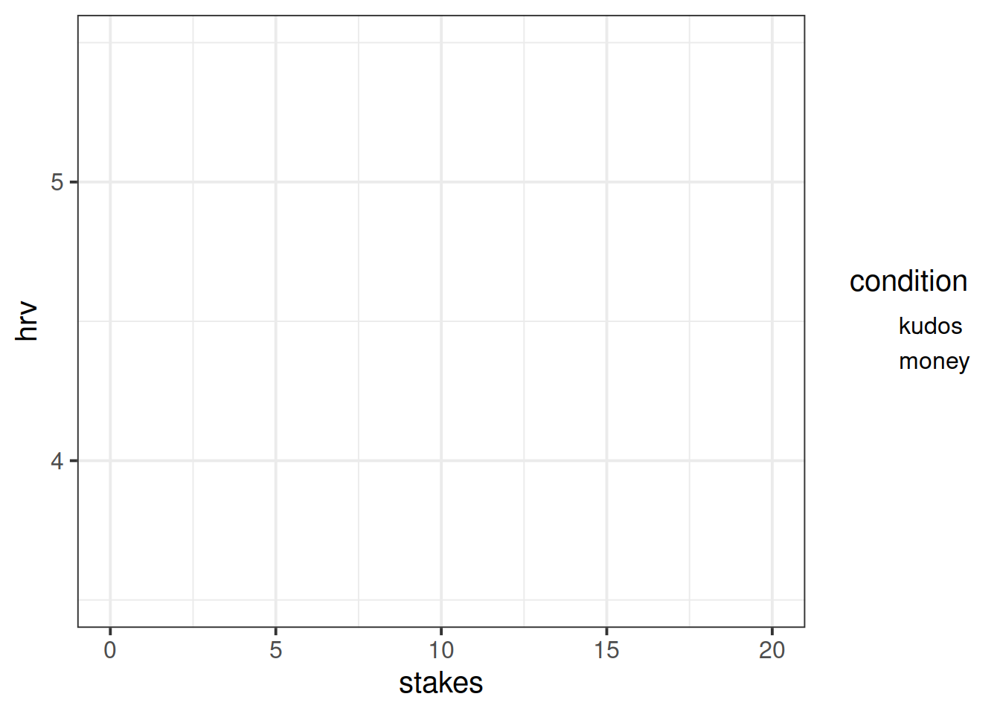

Introducing Multilevel Models
Information about solutions
Solutions for these exercises are available immediately below each question.
We would like to emphasise that much evidence suggests that testing enhances learning, and we strongly encourage you to make a concerted attempt at answering each question before looking at the solutions. Immediately looking at the solutions and then copying the code into your work will lead to poorer learning.
We would also like to note that there are always many different ways to achieve the same thing in R, and the solutions provided are simply one approach.
Preliminaries
- Create a new RMarkdown document or R script (whichever you like) for this week.
A Note on terminology
The methods we’re going to learn about in the first five weeks of this course are known by lots of different names: “multilevel models”; “hierarchical linear models”; “mixed-effect models”; “mixed models”; “nested data models”; “random coefficient models”; “random-effects models”; “random parameter models”… and so on).
What the idea boils down to is that model parameters vary at more than one level. This week, we’re going to explore what that means.
Throughout this course, we will tend to use the terms “mixed effect model,” “linear mixed model (LMM)” and “multilevel model (MLM)” interchangeably.
Introducing Multilevel Models
Multilevel Models (MLMs) (or “Linear Mixed Models” (LMMs)) take the approach of allowing the groups/clusters to vary around our \(\beta\) estimates.
In the lectures, we saw this as:
\[ \begin{align} & \text{for observation }j\text{ in group }i \\ \quad \\ & \text{Level 1:} \\ & \color{red}{y_{ij}} = \color{blue}{\beta_{0i} \cdot 1 + \beta_{1i} \cdot x_{ij}} + \varepsilon_{ij} \\ & \text{Level 2:} \\ & \color{blue}{\beta_{0i}} = \gamma_{00} + \color{orange}{\zeta_{0i}} \\ & \color{blue}{\beta_{1i}} = \gamma_{10} + \color{orange}{\zeta_{1i}} \\ \quad \\ & \text{Where:} \\ & \gamma_{00}\text{ is the population intercept, and }\color{orange}{\zeta_{0i}}\text{ is the deviation of group }i\text{ from }\gamma_{00} \\ & \gamma_{10}\text{ is the population slope, and }\color{orange}{\zeta_{1i}}\text{ is the deviation of group }i\text{ from }\gamma_{10} \\ \end{align} \]
We are now assuming \(\color{orange}{\zeta_0}\), \(\color{orange}{\zeta_1}\), and \(\varepsilon\) to be normally distributed with a mean of 0, and we denote their variances as \(\sigma_{\color{orange}{\zeta_0}}^2\), \(\sigma_{\color{orange}{\zeta_1}}^2\), \(\sigma_\varepsilon^2\) respectively.
The \(\color{orange}{\zeta}\) components also get termed the “random effects” part of the model, Hence names like “random effects model,” etc.
Fitting Multilevel Models
Introducing lme4
We’re going to use the lme4 package, and specifically the functions lmer() and glmer().
“(g)lmer” here stands for “(generalised) linear mixed effects regression.”
We write the first bit of our formula just the same as our old friend the normal linear model y ~ 1 + x + x2 + ..., where y is the name of our outcome variable, 1 is the intercept (which we don’t have to explicitly state as it will be included anyway) and x, x2 etc are the names of our explanatory variables.
With lme4, we now have the addition of __random effect terms)), specified in parenthesis with the | operator (the vertical line | is often found to the left of the z key on QWERTY keyboards).
We use the | operator to separate the parameters (intercept, slope etc.) on the LHS, from the grouping variable(s) on the RHS, by which we would like to model these parameters as varying.
Random Intercept
Let us suppose that we wish to model our intercept not as a fixed constant, but as varying randomly according to some grouping around a fixed center.
We can such a model by allowing the intercept to vary by our grouping variable (g below):
lmer(y ~ 1 + x + (1|g), data = df)
\[ \begin{align} & \text{Level 1:} \\ & \color{red}{Y_{ij}} = \color{blue}{\beta_{0i} \cdot 1 + \beta_{1} \cdot X_{ij}} + \varepsilon_{ij} \\ & \text{Level 2:} \\ & \color{blue}{\beta_{0i}} = \gamma_{00} + \color{orange}{\zeta_{0i}} \\ \end{align} \]
Random Slope
By extension we can also allow the effect y~x to vary between groups, by including the x on the left hand side of | in the random effects part of the call to lmer().
lmer(y ~ 1 + x + (1 + x |g), data = df)
\[ \begin{align} & \text{Level 1:} \\ & \color{red}{y_{ij}} = \color{blue}{\beta_{0i} \cdot 1 + \beta_{1i} \cdot x_{ij}} + \varepsilon_{ij} \\ & \text{Level 2:} \\ & \color{blue}{\beta_{0i}} = \gamma_{00} + \color{orange}{\zeta_{0i}} \\ & \color{blue}{\beta_{1i}} = \gamma_{10} + \color{orange}{\zeta_{1i}} \\ \end{align} \]
Estimation
Maximum Likelihood (ML)
Remember back to DAPR2 when we introduced logistic regression, and we briefly discussed Maximum likelihood in an explanation of how models are fitted.
The key idea of maximum likelihood estimation (MLE) is that we (well, the computer) iteratively finds the set of estimates for our model which it considers to best reproduce our observed data. Recall our simple linear regression model of how practice (hrs per week) affects reading age: \[ \color{red}{ReadingAge_i} = \color{blue}{\beta_0 \cdot{} 1 + \beta_1 \cdot{} Practice_{i}} + \varepsilon_i \] There are values of \(\beta_0\) and \(\beta_1\) and \(\sigma_\varepsilon\) which maximise the probability of observing the data that we have. For linear regression, these we obtained these same values a different way, via minimising the sums of squares. And we saw that this is not possible for more complex models (e.g., logistic), which is where we turn to MLE.
To read about the subtle difference between “likelihood” and “probability,” you can find a short explanation at https://uoepsy.github.io/faq/lvp.html

Figure 1: MLE

Figure 2: MLE for a more complex model
Restricted Maximum Likelihood (REML)
When it comes to estimating multilevel models, maximum likelihood will consider the fixed effects as unknown values in its estimation of the variance components (the random effect variances). This leads to biased estimates of the variance components, specifically biasing them toward being too small, especially if \(n_\textrm{clusters} - n_\textrm{level 2 predictors} - 1 < 50\). Restricted Maximum Likelihood (REML), however, separates the estimation of fixed and random parts of the model, leading to unbiased estimates of the variance components.
lmer() models are by default fitted with REML. This is better for small samples.
Comparing Models, ML & REML
When we compare models that differ in their fixed effects via comparing model deviance (e.g. the likelihood ratio), REML should not be used as only the variance components are included in the likelihood. Functions like anova() will automatically refit your models with ML for you, but it is worth checking.
We cannot compare (either with ML or REML) models that differ in both the fixed and random parts.
Model Convergence
For large datasets and/or complex models (lots of random-effects terms), it is quite common to get a convergence warning. There are lots of different ways to deal with these (to try to rule out hypotheses about what is causing them).
For now, if lmer() gives you convergence errors, you could try changing the optimizer. Bobyqa is a good one: add control = lmerControl(optimizer = "bobyqa") when you run your model.
lmer(y ~ 1 + x1 + ... + (1 + .... | g), data = df,
control = lmerControl(optimizer = "bobyqa"))
Exercises
Toy Dataset
Recall our toy example data in which we might use linear regression to determine how practice (in hours per week) influences the reading age of different toy figurines. We have data on various types of toys, from Playmobil to Powerrangers, to Farm Animals.

toys_read <- read_csv("https://uoepsy.github.io/data/toyexample.csv")Using lmer() from the lme4 package, fit a model of practice (hrs_week) predicting Reading age (R_AGE), with by-toytype random intercepts.
Pass the model to summary() to see the output.
Sometimes the easiest way to start understanding your model is to visualise it.
Load the package broom.mixed. Along with some handy functions tidy() and glance() which give us the information we see in summary(), there is a handy function called augment() which returns us the data in the model plus the fitted values, residuals, hat values, Cook’s D etc..
ri_model <- lmer(R_AGE ~ hrs_week + (1 | toy_type), data = toys_read)
library(broom.mixed)
augment(ri_model)Add to the code below to plot the model fitted values, and color them according to toy type.
(you will need to edit ri_model to be whatever name you assigned to your model).
augment(ri_model) %>%
ggplot(aes(x = hrs_week, y = ......

We have just fitted the model: \[ \begin{align} & \text{For toy } j \text{ of toy-type } i \\ & \color{red}{\textrm{Reading_Age}_{ij}} = \color{blue}{\beta_{0i} \cdot 1 + \beta_{1} \cdot \textrm{Practice}_{ij}} + \varepsilon_{ij} \\ & \color{blue}{\beta_{0i}} = \gamma_{00} + \color{orange}{\zeta_{0i}} \\ \end{align} \]
For our estimates of \(\gamma_{00}\) (the fixed value around which toy-type intercepts vary) and \(\beta_1\) (the fixed estimate of the relationship between reading age and practice), we can use fixef().
fixef(ri_model)## (Intercept) hrs_week
## 1.627422 1.154725Can you add to the plot in the previous question, a thick black line with the intercept and slope given by fixef()?
Hint: geom_abline()


Figure 4: Model fitted values

Figure 5: Summary model output
lmer(R_AGE~1 + hrs_week + (1|toy_type),
data = toys_read)
We’re going to map the parts of the plot in Figure 4 to the summary() output of the model in Figure 5. Match the coloured sections Red, Orange, Yellow and Blue in Figure 5 to the descriptions below of 4 A through D.
- where the black line cuts the y axis
- the standard deviation of the distances from all the individual toy types lines to the black lines
- the slope of the black lines
- the standard deviation of the distances from all the individual observations to the line for the toy type to which it belongs.
Can you now map those same coloured sections in Figure 5 to the mathematical terms in the model equation:
\[ \begin{align} & \text{Level 1:} \\ & \color{red}{ReadingAge_{ij}} = \color{blue}{\beta_{0i} \cdot 1 + \beta_{1} \cdot Practice_{ij}} + \varepsilon_{ij} \\ & \text{Level 2:} \\ & \color{blue}{\beta_{0i}} = \gamma_{00} + \color{orange}{\zeta_{0i}} \\ \quad \\ & \text{where} \\ & \color{orange}{\zeta_0} \sim N(0, \sigma_{\color{orange}{\zeta_{0}}}) \text{ independently} \\ & \varepsilon \sim N(0, \sigma_{\varepsilon}) \text{ independently} \\ \end{align} \]
Fit a model which allows also (along with the intercept) the effect of practice (hrs_week) to vary by-toytype.
Then, using augment() again, plot the model fitted values. What do you think you will see?

Plot the model fitted values but only for the Farm Animals and the Scooby Doo toys, and add the observed reading ages too.
Do this for both the model with the random intercept only, and the model with both the random intercept and slope.


Basketball/HRV
While the toy example considers the groupings or ‘clusters’ of different types of toy, a more relate-able grouping in psychological research is that of several observations belonging to the same individual. One obvious benefit of this is that we can collect many more observations with fewer participants, and account for the resulting dependency of observations.
Recall the data from the previous week, from an experiment in which heart rate variability (HRV) was measured for amateur basketball players when tasked with scoring a goal with varying levels and type of potential loss/reward.
The data was split over two files. The code below will read in both datasets and join them for you:
library(readxl)
download.file(url = "https://uoepsy.github.io/data/basketballhrv.xlsx",
destfile = "baskeballhrvdata.xlsx")
bball <-
left_join(
read_csv("https://uoepsy.github.io/data/basketballconditions.csv"),
read_xlsx("baskeballhrvdata.xlsx") %>%
pivot_longer(trial_1:trial_20, names_to = "trial_no", values_to = "hrv")
) %>%
mutate(sub = factor(sub))!!! Note if read_xlsx() was causing problems for you, this will also work:
bball <-
left_join(
read_csv("https://uoepsy.github.io/data/basketballconditions.csv"),
read_csv("https://uoepsy.github.io/data/bballhrv.csv") %>%
pivot_longer(trial_1:trial_20, names_to = "trial_no", values_to = "hrv")
) %>%
mutate(sub = factor(sub))Recall that the research question was concerned with how the size and type of potential reward influence stress levels (as measured by heart rate variability):
How do size and type of reward/loss interact to influence levels of stress?
Remember to think about:
- what is our outcome variable of interest?
- what is the clustering?
- does size of reward vary within clusters, or between?
- does type of reward vary within clusters, or between?
Can you fit a linear mixed model to examine the effects of size and type of reward on HRV, and their interaction?
Tip: If you get an error about model convergence, consider changing the optimiser (see above)
Construct some parametric bootstrapped confidence intervals for your fixed effects.
Using the sjPlot package, produce a plot of the interaction between size and type of reward on HRV. Before you get R to make your plot, can you predict what it is going to look like? 
WeightMaintain Study
Another very crucial advantage is that we can use the same methods to study how people change over time.
WeightMaintain Data Codebook
The weight maintenance data (WeightMaintain3), a made-up data set based on Lowe et al. (2014, Obesity, 22, 94-100), contains information on overweight participants who completed a 12-week weight loss program, and were then randomly assigned to one of three weight maintenance conditions:
- None (Control)
- MR (meal replacements): use MR to replace one meal and snack per day
- ED (energy density intervention): book and educational materials on purchasing and preparing foods lower in ED (reducing fat content and/or increasing water content of foods)
Weight was assessed at baseline (start of maintenance), 12 months post, 24 months post, and 36 months post.
It is available, in .rda format, at https://uoepsy.github.io/data/WeightMaintain3.rda
Load the data, and take a look at what is in there. Hopefully it should match the description above.
Hint: load(url("https://uoepsy.github.io/data/WeightMaintain3.rda"))
Q: Overall, did the participants maintain their weight loss or did their weights change?
Each of our participants have measurements at 4 assessments. We need to think about what this means for the random effects that we will include in our model (our random effect structure). Would we like our models to accommodate individuals to vary in their starting weight change, to vary in their weight change over the course of the assessment period, or both?
To investigate whether weights changed over the course of the assessments, or whether they stayed the same, we can fit and compare 2 models:
- The “null” or “intercept-only” model.
- A model with weight change predicted by assessment.
And we can then compare them in terms of model fit. As discussed in the lecture, there are lots of ways to assess inference in multilevel models.
Our sample size here (180 participants, each with 4 observations) is reasonably large given the relative simplicity of our model. We might consider running a straightforward Likelihood Ratio Test using anova(restricted_model, full_model) to compare our two models. This will assume that the difference in model deviances ( \(-2 \times \text{LogLikelihood}\) ) is \(\chi^2\)-distributed.
If we wish to use a more robust test, we might use the PBmodcomp() function from the pbkrtest package, in order to bootstrap the likelihood ratio statistic based on simulations based on the parameters of the model.
Tip: For now, don’t worry too much about “singular fits.” We’ll talk more about how we might deal with them next week!
Q: Did the experimental condition groups differ in overall weight change and rate of weight change (non-maintenance)?
Hint: It helps to break it down. There are two questions here:
- do groups differ overall?
- do groups differ over time?
We can begin to see that we’re asking two questions about the Condition variable here: “is there an effect of Condition?” and “Is there an interaction between Assessment and Condition?”
Try fitting two more models which incrementally build these levels of complexity, and compare them (perhaps to one another, perhaps to models from the previous question - think about what each comparison is testing!)
We saw that we can get the coefficients using fixef(model).
We can also use tidy(model), and similar to models fitted with lm(), we can pull out the bit of the summary() using:
summary(model)$coefficientsFrom your model from the previous question which investigates whether conditions differed over in their rate of weight change, can you state how the conditions differed?
Make a graph of the model fit and the observed data.
Hint: There are lots of ways you can do this, try a couple:
- Using the effects package, does this help?
as.data.frame(effect("Assessment:Condition", model))
- Using
fitted(model) - Using
augment()from the broom.mixed package.

Examine the parameter estimates and interpret them (i.e., what does each parameter represent?)
m.full <- lmer(WeightChange ~ Assessment*Condition + (Assessment | ID),
data=WeightMaintain)
summary(m.full)